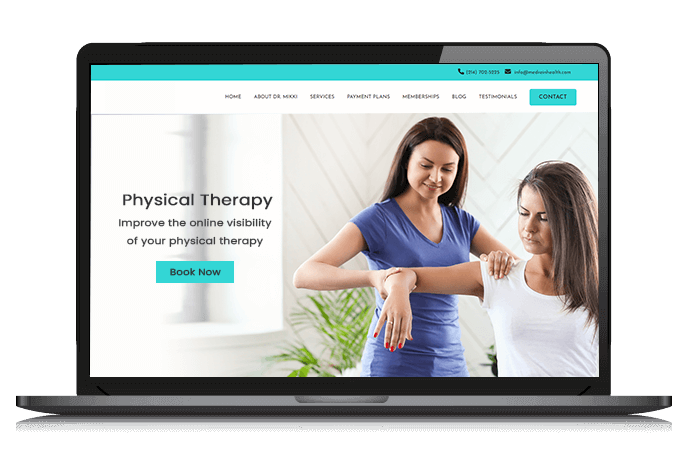

Throughout this class, I have learned important skills like problem-solving, logical thinking, debugging, and collaboration -- Especially in projects like Itita's Website.
These skills can help me in other subjects, like math and science, by teaching me to break down difficult problems step by step and think more critically. I’ve also learned to be more patient and persistent when working through challenges, even when coding gets frustrating. One of my goals is to continue improving my coding skills so I can possibly create websites in the future, such as for my own physical therapy practice or other personal projects. A weakness I still have is sometimes overthinking simple problems and getting too frustrated over code, so I want to keep practicing and asking questions when I get stuck so I can continue to learn.
